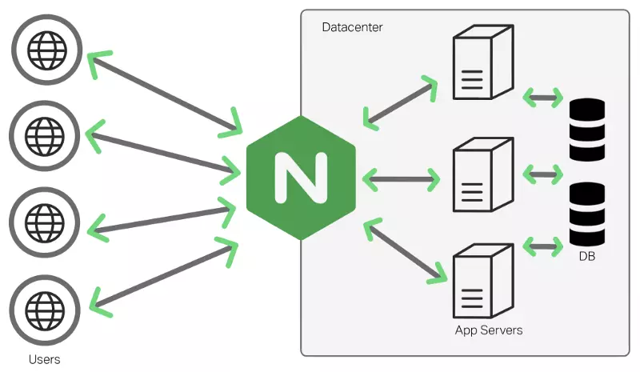

Nginx and Reverse Proxy
How a single entry point receives web traffic and routes each request to the right service.
Learning relevance: Web hosting and request routing
What is Nginx?
Nginx is a high-performance web server that is also widely used as a reverse proxy, load balancer, and cache. It handles many simultaneous connections efficiently, which is why it powers a large share of production websites.
How a reverse proxy works
A forward proxy acts on behalf of clients, while a reverse proxy acts on behalf of servers. Visitors connect only to the proxy, which then decides which backend service should handle the request. The client never sees the backend addresses, and the backends never have to face the internet directly.
Request routing in practice
Routing rules are declared in the Nginx configuration. In the example
below, requests under /api/ are forwarded to an application
server, and everything else is served as static files:
server {
listen 80;
server_name example.com;
location /api/ {
proxy_pass http://127.0.0.1:3000;
proxy_set_header Host $host;
proxy_set_header X-Real-IP $remote_addr;
}
location / {
root /var/www/html;
index index.html;
}
}Why it matters
- Security: backend servers stay hidden behind a single controlled entry point.
- Scalability: the proxy can distribute traffic across several identical servers.
- Simplicity: TLS termination, caching, and compression can live in one place.